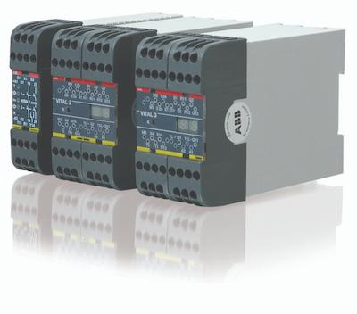

Kompatibilita zařízení
Možnost použití se specifickými zařízeními nebo s tradičními zařízeními připojovanými pomocí adaptérů Tina.
Má-li několik bezpečnostních zařízení řídit tentýž výstup, je běžné jejich uspořádání v sériovém zapojení. Mají-li však být splněny podmínky pro zařazení do kategorie PL e, sériové zapojení nelze použít a každé zařízení by mělo mít své vlastní bezpečnostní relé.
Řídící jednotka Vital

O produktu Vital
Kontroler Vital poskytuje možnost řízení menších bezpečnostních systémů strojů, pro jejichž činnost by jinak byla potřebná programovatelná řídící jednotka nebo skupina bezpečnostních relé. Díky tomu lze systém navrhnout jednodušeji, přehledněji a s nižší náročností na zapojování.
Hlavní výhody
Jedna jednotka Vital může nahradit několik bezpečnostních relé v menších systémech.
Vital usnadňuje návrh bezpečnostního řešení se zaměřením na požadovanou úroveň bezpečnosti.
Přehlednější struktura systému pomáhá snadněji identifikovat poruchy a zkrátit odstávky.
Nižší složitost zapojení přináší rychlejší realizaci i jednodušší servis.
Hlavní vlastnosti
Možnost použití se specifickými zařízeními nebo s tradičními zařízeními připojovanými pomocí adaptérů Tina.
Indikace stavu zařízení a smyčky pomocí LED usnadňuje dohled nad provozem i rychlou diagnostiku.
Informační signál umožňuje lepší přehled o stavu systému a jednodušší návaznost na další řízení.
Zařízení vybavená konektory M12 podporují praktické zapojení a spolehlivý provoz v průmyslovém prostředí.
Ideální řešení pro menší bezpečnostní systémy strojů, kde by jinak byla nutná programovatelná jednotka.
Zapojení více zařízení za sebou při zachování požadavků na zařazení do kategorie PL e.
Další krok